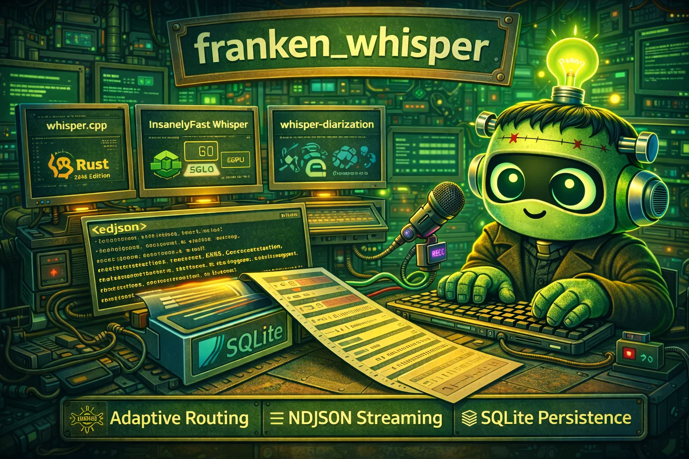

It listens · entirely in your browser
Whisper, and who said it.
In this tab.
franken_whisper rebuilds OpenAI's Whisper and NVIDIA's Streaming
Sortformer speaker diarizer in pure, memory-safe Rust — ggml parser, log-mel frontend,
encoder, decoder, word timestamps, four-speaker diarization, and the fusion that stitches
them into who said what. No PyTorch, no Python, no FFI, no subprocess. The same
code that ships as the fw CLI compiles to WebAssembly, so
large-v3-turbo — the full 809-million-parameter model, not a demo-sized
stand-in — transcribes and diarizes your recordings entirely on your CPU, in this
page. Your audio never leaves the tab, and the CSP's
connect-src 'self' makes that a browser-enforced promise rather than a
privacy-policy one.
Try it in your browser Install the CLI

Live · in this tab
Run it right now.
The real pipeline, not a mock: Whisper large-v3-turbo (1.5 GB, f16) transcribes, Sortformer (469 MB, f32) works out who is speaking when, and the CLI's own projection-fusion attributes every line — all in hand-written Rust kernels compiled to wasm, running on your CPU. Both downloads are SHA-256-verified against pinned manifests, cached in browser storage, and re-verified on every visit. The Sortformer package is additionally re-authenticated inside the engine against its conversion receipt, exactly as the CLI does it. There is no server behind this panel.
01 · The models
02 · The recording
Decoded in-tab by Symphonia (pure Rust), downmixed and resampled to 16 kHz mono. Honest expectation: the current build is single-threaded and measured ~8× real time on an M-series desktop — a 1-minute clip takes ~8 minutes. Start short. The threaded build (the same parked-worker design the sibling projects ship) is the tracked next lever.
03 · Run
The transcript
Results land here: every line timestamped and speaker-attributed, with the same
SPEAKER_00…03 labels and fusion rules the CLI emits. The measured
wall-clock and realtime ratio print with each run — numbers from your
hardware, not marketing.
Anatomy · one code path
The same bytes as the CLI.
The browser build is not a port of a port. The wasm crate mounts the native engine's source files directly — the identical Rust that decodes on a workstation — behind one platform seam: a host-fed clock and a serial thread scope. What differs is honest and named; everything else is the same pipeline, stage for stage.
- ggml parser. The 1.5 GB turbo file is scanned once for its tensor directory, then each tensor hydrates straight from browser storage through a positioned reader — the file never exists as one in-memory blob. f16 tensors stay f16-resident; that residency is what fits an 809M-parameter encoder in a 32-bit address space.
- Log-mel frontend. The reference mel pipeline, bit-faithful to the native engine: 25 ms windows, 10 ms hop, 128 mel bins for turbo.
- Encoder + decoder. 32 encoder layers, 4 decoder layers, greedy temperature-0 decode with the CLI's window retry and context-carry policies. The wasm build multiplies f16 weights with the same batched dequant-GEMV kernels the native decoder ships by default.
- Sortformer diarizer. NVIDIA's streaming four-speaker model — FastConformer frontend, transformer stack, per-frame speaker lanes — hand-ported to the same Rust, verified in-engine against its conversion receipt before a single frame is scored.
- Projection fusion. The CLI's projection-fusion-v1 attributes each transcript segment to the dominant speaker turn, fills gap segments from the turn timeline, and merges runs into speaker-attributed blocks. The wasm build calls the very function the CLI calls — relocated, not re-implemented.
Diarization · who said what
Names on every line.
Transcription without attribution is half an answer. franken_whisper runs diarization as
a first-class stage, not an afterthought: Sortformer scores four speaker lanes at 80 ms
resolution, turns become a timeline with per-turn confidence and overlap suspicion, and
the fusion pass projects that timeline onto the transcript so consecutive same-speaker
segments merge into readable blocks. The CLI exposes the same result as
speaker_segments in its JSON envelope; the playground renders it directly.
Turn timeline
Start, end, speaker, confidence, and overlap suspicion for every detected turn — the raw evidence, preserved alongside the merged view.
Conservative first
A segment is labeled only when one speaker owns at least 70% of it at calibrated
confidence; the fusion pass then fills the gaps from the same evidence instead of
returning null.
Receipt-verified
The diarizer's weight package re-authenticates against its frozen conversion receipt (SHA-256 chain, tensor census) inside the engine, in the browser, every load.
Speed · measured, not promised
Honest numbers.
On native CPU, franken_whisper's engine measures 2.99× faster than whisper.cpp at matched greedy decode settings, side-by-side in one interleaved harness — the methodology and evidence hashes live in the repo's performance ledger. On Apple-silicon GPU, the Metal encoder went from 15.4 s to 1.85 s per window across one ledgered kernel campaign. The wasm build in this page is the same engine on one browser thread with SIMD128 — measured ~8× real time on an M-series desktop (down from 45× in one ledgered, byte-identical kernel pass) — and the page prints the exact ratio after each run, measured on your machine, not quoted from ours. Threaded wasm is the next lever, and it will land the same way everything here landed: behind a measured, ledgered gate.
2.99× vs whisper.cpp
Native CPU, matched greedy settings, interleaved A/B pairs, transcript-equality gate, evidence bundle hashed in the ledger.
Every claim gated
One lever per pass, kill-switch env for every optimization, byte-identical or ledgered — the repo's PERF_LEDGER.md and NEGATIVE_EVIDENCE.md are the record.
This page tells the truth
The playground prints wall-clock and realtime ratio per run. If it is slow on your hardware, it says so, in numbers.
Agent-first · scriptable to the bone
Built for robots too.
The CLI answers to agents first: NDJSON streaming events, a stable JSON envelope with
raw_output introspection (which encoder route actually ran, window stats,
dropped-window accounting), durable SQLite job storage, and exit codes that mean
things. If you are wiring transcription into a pipeline, the contract is the product.
fw transcribe meeting.m4a --diarize --robot | jq -r '
.result.speaker_segments[]
| "[\(.speaker // "?")] \(.text)"'Install · one line
Take it home.
The native CLI is faster than this tab will ever be, runs every model tier, and speaks NDJSON. One line, no Python environment, no CUDA archaeology.
# macOS / Linux
curl -fsSL https://raw.githubusercontent.com/Dicklesworthstone/franken_whisper/main/install.sh | bash
# or Homebrew
brew install dicklesworthstone/tap/franken-whisper
# or cargo
cargo install franken_whisperThen: fw transcribe recording.mp3 --diarize